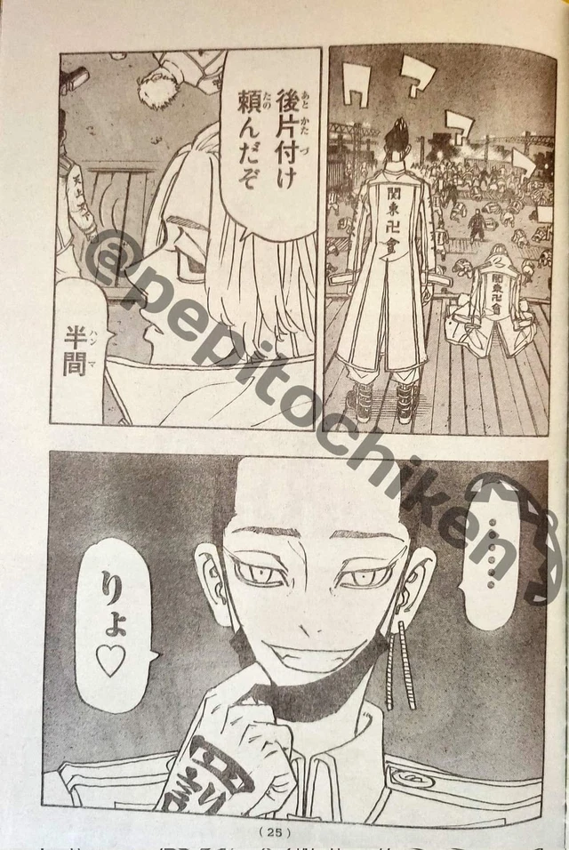
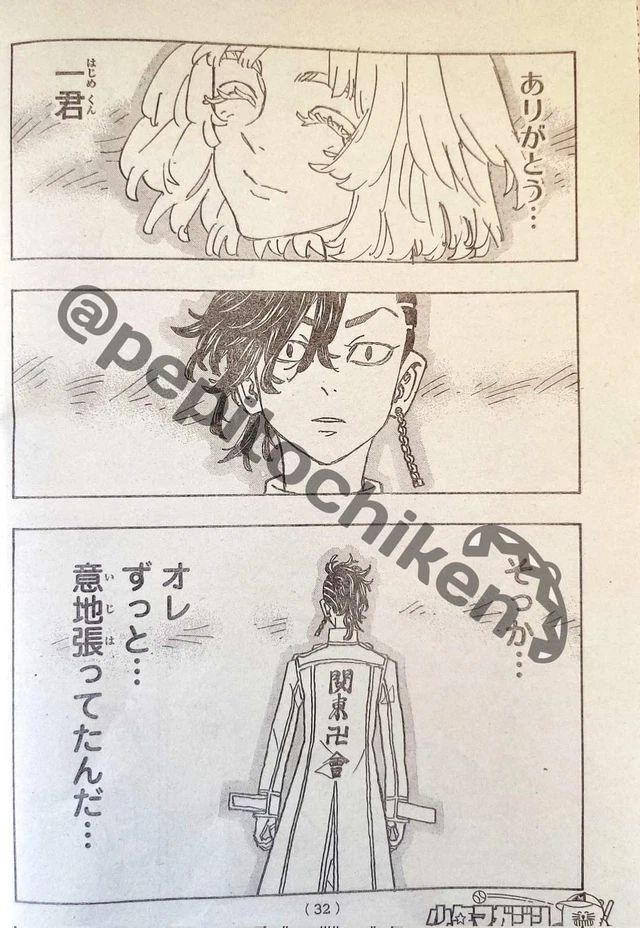

Trong Tokyo Revengers 251, những hình ảnh mới cho thấy Inui bị Waka và Benkei liên thủ đánh cho tơi tả. Inui đang tỏ ra khó khăn khi không thể phản công trước sức tấn công của cặp đôi bên phía Kantou Manji. Một hình ảnh của chap mới cho thấy sự thay đổi của Koko, một nhân vật đang thuộc phe Kantou Manji. Koko nhìn thấy cảnh đó thì nhớ về chị của Inui. Sau một hồi lưỡng lự, Koko tham chiến, hỗ trợ Inui đánh Waka và Benkei. Như vậy đúng như dự đoán của nhiều độc giả, thì trong nội bộ băng Kantou Manji sẽ có những thành viên phản bội và theo băng của Takemichi. Nhân vật đầu tiên làm điều này là Koko.
Trong Tokyo Revengers 251 cũng tiết lộ những hình ảnh mới nhất về Mikey. Lúc này khi nhìn thấy thế trận có hơi không như ý muốn, Mikey ra lệnh cho Hanma chiến đấu. Hanma cởi khẩu trang, nở nụ cười man dại.
Thế nhưng lúc Mikey đang bắt đầu bận tâm hơn về trận chiến thì Pachin tìm đến chỗ Mikey. Có vẻ như cả 2 sẽ diễn ra một trận chiến.